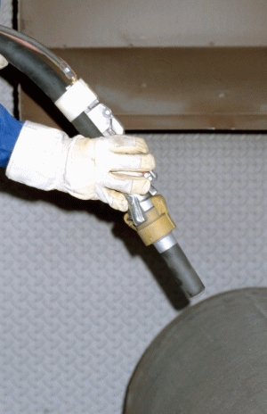

In hydraulischen Anlagen und Maschinen werden Hydraulik-Schlauchleitungen in verschiedenen Druckstufen, Anschlussformen und Ausführungen eingesetzt.
Bei diesen Schlauchleitungen handelt es sich um sicherheitsrelevante Bauteile, die bei Versagen Gefährdungen hervorrufen können.
Beim Einsatz hydraulischer Anlagen und Maschinen sind im Hinblick auf die Hydraulikschlauchleitungen unter anderem zu berücksichtigen: